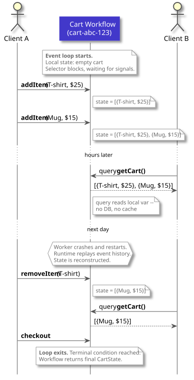
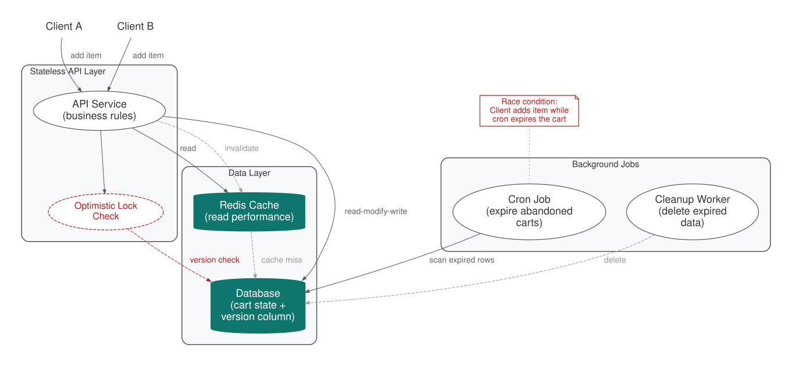

The Entity (Durable Object)
Encapsulate a domain object’s mutable state and behavior inside a single long-lived durable execution, accessed exclusively through typed messages.
Intent. A domain object needs mutable state that survives pod restarts, deploys, and infrastructure failures — without an external database. The Entity pattern places that state, along with the command handlers that mutate it and the query handlers that read it, inside a single durable workflow identified by a stable business key.
Motivation. Consider an e-commerce shopping cart. A customer opens a session, adds a few items, gets distracted, comes back the next day, removes one item, applies a coupon, and checks out — or abandons the cart entirely. The interaction spans minutes to days. The cart has identity (one per customer session), mutable state (the line items, quantities, and applied discounts), and a lifecycle (active until checkout, expiration, or explicit abandonment).
This is not a request-response problem. The cart is a thing — a long-lived object with behavior. It accepts commands ("add this item," "apply this coupon"), answers queries ("what is in the cart right now?"), and eventually reaches a terminal state. If you squint, it looks like an object in the object-oriented sense: encapsulated state, a public interface, a lifetime managed by the system.
The Pattern

The workflow lives as long as the domain object does — one per cart, one per
device, one per game lobby. It’s identified by a stable business key like
cart-{customer_id}, so external clients always know how to find it.
Commands arrive as asynchronous, durably delivered messages — called signals in Temporal — like
AddItem, RemoveItem, or Checkout. Inside the workflow, a selector (Temporal’s Go SDK term) — a channel multiplexer that blocks until
any one of several channels has a message, analogous to Go’s select
statement or a Unix poll() — sits in an event loop, picking up signals
one at a time, validating business rules,
and mutating local state. Because the selector processes signals sequentially,
there are no concurrent mutations — two clients adding items at the same
time don’t race. Their signals are queued and processed in order.
Reads arrive as synchronous state inspections — queries in Temporal. A query handler returns the current state without side effects — no database round-trip, no cache to invalidate. The state you read is always consistent because it is the actual live state.
When the event history grows too large, the workflow compacts its history by starting a fresh execution with only the current state — a mechanism called ContinueAsNew in Temporal. The workflow terminates when it reaches a terminal condition:
checkout, deletion, or an inactivity timer.
Traditionally, building a stateful domain object like this means scattering it across at least three systems: a database for state (with optimistic locking to handle concurrent writes), a stateless API service for business rules (separated from the state it protects), and a cron job or TTL mechanism for lifecycle (expiration, cleanup). The domain object doesn’t exist as a coherent thing in this architecture — it’s a convention, maintained by the discipline of developers who know these systems are related.

With Durable Execution. The Entity pattern collapses all three concerns into a single workflow. State becomes a local variable. Commands arrive as signals. Queries read the variable directly. The event loop is the lifecycle.
func CartWorkflow(ctx workflow.Context, cartID string) (*CartState, error) {
state := &CartState{ID: cartID, UpdatedAt: workflow.Now(ctx)} (1)
err := workflow.SetQueryHandler(ctx, "getCart", func() (*CartState, error) { (2)
return state, nil
})
if err != nil {
return nil, fmt.Errorf("register query handler: %w", err)
}
addItemCh := workflow.GetSignalChannel(ctx, "addItem") (3)
removeItemCh := workflow.GetSignalChannel(ctx, "removeItem")
checkoutCh := workflow.GetSignalChannel(ctx, "checkout")
checkedOut := false
for !checkedOut { (4)
selector := workflow.NewSelector(ctx)
selector.AddReceive(addItemCh, func(c workflow.ReceiveChannel, _ bool) {
var cmd AddItemCommand
c.Receive(ctx, &cmd)
state.Items = append(state.Items, cmd.Item) (5)
state.UpdatedAt = workflow.Now(ctx)
})
selector.AddReceive(removeItemCh, func(c workflow.ReceiveChannel, _ bool) {
var cmd RemoveItemCommand
c.Receive(ctx, &cmd)
for i, item := range state.Items {
if item.ProductID == cmd.ProductID {
state.Items = append(state.Items[:i], state.Items[i+1:]...)
break
}
}
state.UpdatedAt = workflow.Now(ctx)
})
selector.AddReceive(checkoutCh, func(c workflow.ReceiveChannel, _ bool) {
var signal struct{}
c.Receive(ctx, &signal)
checkedOut = true
})
selector.Select(ctx)
if ctx.Err() != nil {
return state, ctx.Err()
}
}
return state, nil
}| 1 | State lives in a local variable — no external database, no ORM, no schema. |
| 2 | The query handler exposes state read-only; external callers can inspect the cart without mutating it. |
| 3 | Each signal channel delivers a command. The selector processes them one at a time — no concurrent mutations, no optimistic locking. |
| 4 | The event loop is the entity’s lifecycle. It runs until checkout or cancellation — state, behavior, and lifecycle in one construct. |
| 5 | Business rules are enforced inline, at the point of mutation, next to the state they protect. |
The CartWorkflow function is the entire entity. state is a Go struct living
in the worker’s memory — not in a database, not in Redis, not in any external
store. The worker holds it as a plain local variable. When a query arrives,
the handler reads that variable directly — zero network hops, zero
serialization, zero cache invalidation. This is why the Entity pattern
eliminates the cache layer from the traditional architecture: the in-memory
state on the worker is both the source of truth and the fast read path.
When the workflow replays after a crash, the runtime reconstructs state by
re-executing the deterministic code path up to the point of failure, then
continues from there. There is no database table, no ORM mapping, no migration
file — the event history is the persistence layer, and replay is the
recovery mechanism.
The three signal channels — addItem, removeItem, checkout — are the
command interface. The Selector blocks until one of them fires, processes the
command, and loops. No optimistic locking is needed — the sequential
processing model described above eliminates concurrent mutations entirely.
The checkout signal sets a flag and exits the loop. The workflow returns the final cart state. If the worker crashes between receiving a signal and updating the state, the runtime replays the workflow from its last checkpoint, re-applies the signal, and continues. No data is lost, no retry logic is needed in application code.
The full repository includes activity definitions for post-checkout side effects (sending confirmation emails, updating inventory). These would be called after the loop exits, before the workflow returns. The activity signatures:
type CartActivities struct{}
func (a *CartActivities) SendOrderConfirmation(ctx context.Context, state *CartState) error {
fmt.Printf("Order confirmed for cart %s: %d items, total $%.2f\n",
state.ID, len(state.Items), state.Total())
return nil
}
func (a *CartActivities) ReserveInventory(ctx context.Context, items []CartItem) error {
for _, item := range items {
fmt.Printf("Reserved: %s x%d\n", item.Name, item.Quantity)
}
return nil
}Consequences. The Entity pattern eliminates the database, the service layer, and the scheduler as separate systems. The workflow runtime replaces all three. But the trade-offs are real and worth understanding before adopting this pattern.
The most immediate constraint is event history. Every signal, every timer,
every activity completion — each generates events in the workflow’s history.
(Queries do not; they are handled synchronously without modifying history.) A cart
that receives thousands of add/remove operations will accumulate a large
history. Durable execution platforms enforce a configurable maximum history size (Temporal’s default is 50,000
events). Long-lived entities must use ContinueAsNew to periodically compact
their history — Perpetual Execution covers this in detail.
The single-writer model means only one worker processes the workflow at a time. This guarantees consistency but limits write throughput. For most domain objects — shopping carts, user sessions, device twins — the write rate is low enough that this isn’t a problem. For entities that genuinely need high write throughput (a real-time auction with hundreds of bids per second), you’d need to shard by key prefix or use a different pattern.
Query availability is coupled to worker availability. If no worker is available (during a deployment, for instance), queries fail. For read-heavy workloads, project the entity’s state to a read-optimized store via an activity or indexed metadata annotation (a visibility attribute in Temporal) — the same strategy you’d use in a traditional architecture.
The in-memory state model has its own nuance. The worker keeps workflow state in a local execution cache (Temporal calls this the sticky execution cache) — a bounded, in-memory cache of recently active workflows. When the cache is full, the worker evicts the least recently used workflows. If a signal or query arrives for an evicted workflow, the worker replays its event history from the server to reconstruct the state before processing the request. This adds latency on the first access after eviction, but the state is always correct — replay is deterministic. Unlike a traditional cache, there are no invalidation bugs and no stale reads. The cache size is configurable per worker, and for most workloads the hot set of active entities fits comfortably in memory.
Distinction from Code-as-State. Both the Entity and Code-as-State are state patterns, but they model fundamentally different things. Code-as-State (Chapter 2) represents a process that moves through a sequence of steps — the state is implicit in the execution position. The Entity represents an object that sits in a loop, accepting commands indefinitely until some terminal event. If your domain concept has a linear lifecycle (order fulfillment, onboarding flow), use Code-as-State. If it has an event-driven loop (shopping cart, device twin, game lobby), use the Entity.
Origin of the example. The shopping cart workflow is directly inspired by temporal-ecommerce, an official Temporal sample. Our version simplifies the code to emphasize the pattern’s structure, but the architectural idea — one workflow per cart, signals as commands, queries for state — comes from that repository.
Known Applications
-
Shopping carts — one workflow per cart, signals for add/remove, query for contents
-
User sessions — session state in a workflow, signals for actions, timer for inactivity timeout
-
IoT device twins — a workflow per device, signals from telemetry, queries for current state
-
Game lobbies — one workflow per lobby, signals for join/leave/ready, query for lobby state
-
Order management — the order entity progresses through states via signals, queryable at any point
Related Patterns